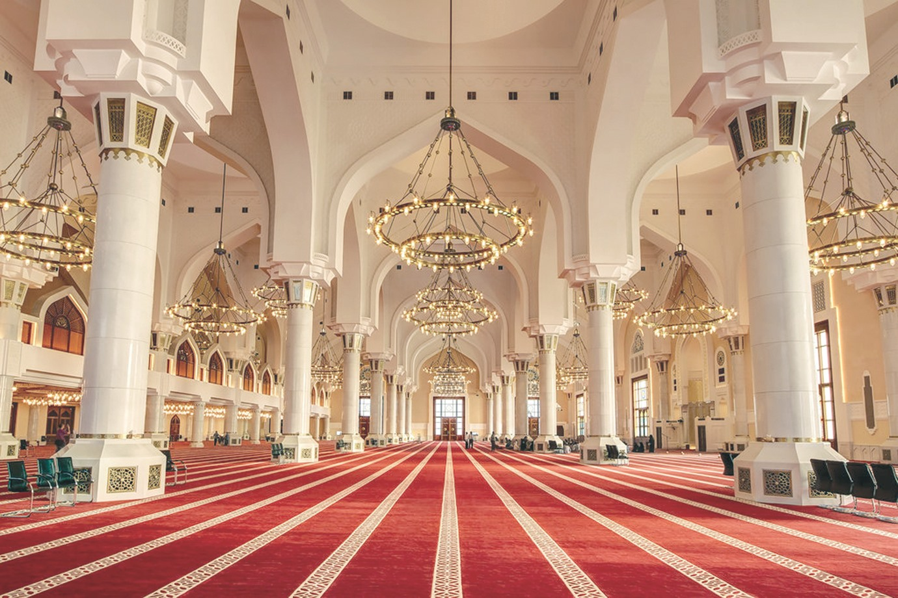
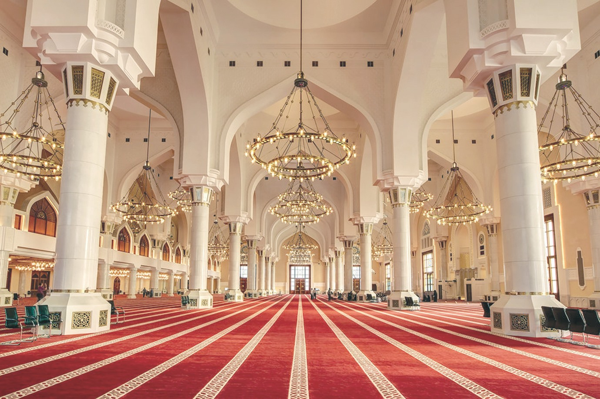

-
الشهادتان :
وهي المفتاح الذي يَدخل به الإنسان إلى الإسلام؛ فأما الطَرَف الأول منها «لا إله إلا الله» فمعناه أن ينطق المسلمُ بلسانه ويُقرَّ في الوقت نفسه بقلبه بأنه لا يوجد إله إلا الله، وعليه يتوكل المسلم، وتقتضي الشهادة أيضاً أن يؤمن الإنسان أنْ لا خالقَ لهذا الكون إلا الله وحده دون شريك يُعبد معه. أما شهادةُ أن محمداً رسول الله، فتعني أن تؤمنَ بأنَّ النبي مُحمداً -صلى الله عليه وسلم- مبعوثٌ رحمةً للعالمين، بشيراً ونذيراً إلى الخلق كافة، وتقتضي أيضاً أن يُطبِّقَ المسلمُ تعاليم النبي محمد -صلى الله عليه وسلم- من خلال فِعل ما أُمر به وترْكِ ما نُهي عنه؛ قال الله -عز وجل- في القرآن الكريم: {ومَا آَتَاكُمُ الرَّسُولُ فَخُذُوهُ وَمَا نَهَاكُمْ عَنْهُ فَانْتَهُوا }[سورة الحشر، من الآية (7)].
- الصلاة (إقام الصلاة) :
الصلاة هي الصلة بين العبد وربِّه، ولها مكانة عظيمة في الإسلام، وهي أول ما يُحاسب عليه الإنسان يوم القيامة، فإن صلَحتْ صلَحَ سائرُ عمله وإن فسدت فسد سائر عمله؛ فهي عمود الدِّين، والمسلم فُرضت عليه خمسُ صلوات يومياً، وغيرُها تطوع. ويجب على كلِّ مسلم أن يؤدي صلاتَه في وقتها المحدد لها، وعلى الهيئة التي علمنا إياها سيدنا محمد صلى الله عليه وسلم؛ إذ يقول: «صلوا كما رأيتموني أصلي» (أخرجه البخاري برقم (605)، عن مالك بن الحويرث).
- الزكاة (إيتاء الزكاة) :
الزكاة هي عبادة مالية فرَضَها اللهُ على مَن ملك النِصَاب -وهو المقدَّر بخمسة وثمانين غراماً من الذهب- طُهرةً لنفوسهم من البخل، ولصحائفهم من الخطايا؛ قال تعالى: { خُذْ مِنْ أَمْوَالِهِمْ صَدَقَةً تُطَهِّرُهُمْ وَتُزَكِّيهِم بِهَا }[سورة التوبة، من الآية (103)]. مقدارها اثنان ونصف بالمائة لمن مَلَكَ النصابَ وحال على ماله حَوْل قمري كامل. وتُدفع الزكاة للفقراء والمحتاجين، ويَسقط هذا الفرض عمَّن لا يَملك النصاب. ولم يَترك الإسلامُ للمسلم حرية التصرف في هذا المبلغ المستقطع، بل حدَّده في مسالكَ ثمانيةٍ يُمكن للمسلم أن يختارَ أحدها لإنفاق الزكاة؛؛؛ قال تعالى: { إِنَّمَا الصَّدَقَاتُ لِلْفُقَرَاءِ وَالْمَسَاكِينِ وَالْعَامِلِينَ عَلَيْهَا وَالْمُؤَلَّفَةِ قُلُوبُهُمْ وَفِي الرِّقَابِ وَالْغَارِمِينَ وَفِي سَبِيلِ اللَّهِ وَابْنِ السَّبِيلِ فَرِيضَةً مِنَ اللَّهِ وَاللَّهُ عَلِيمٌ حَكِيمٌ }[سورة التوبة، الآية: (60)].
- الصوم (صوم رمضان) :
أمَّا الصيام فهو صيام شهر رمضان، ويعتبر شهر رمضان موسماً عظيماً تكثُر فيه الطاعات، وهو شهر مبارك تتنزل فيه الرحمة ويُجدِّد فيه العبدُ عهده مع الله ويتقرب إليه بالطاعات. ولصيام رمضان فضائل عدَّة، فقد تكفَّل اللهُ لمن صامه إيماناً واحتساباً أن يغفر ذنبه. والمسلم يصوم عن الطعام والشراب والمعاشرة الزوجية -لمن كان متزوجاً- من طلوع الفجر إلى غروب الشمس. ويَسقط هذا الفرض عمن لايقْوَى على صومه كمرض أو سفرٍ؛ قال تعالى: { فَمَنْ كَانَ مِنْكُمْ مَرِيضًا أَوْ عَلَى سَفَرٍ فَعِدَّةٌ مِنْ أَيَّامٍ أُخَرَ }[سورة البقرة، من الآية (184)].
- الحج (حج البيت لمن استطاع إليه سبيلاً) :
الحج لغةً: هو القصد إلى مُعظَّم، واصطلاحاً: هو زيارة المسجد الحرام في مكة المكرمة والوقوف بعرفة والطواف بالكعبة المشرفة. وقد فُرض الحج على كل مسلم بالغ يَملك القدرة المالية والبدنية؛ قال تعالى: { وَلِلَّهِ عَلَى النَّاسِ حِجُّ الْبَيْتِ مَنِ اسْتَطَاعَ إِلَيْهِ سَبِيلًا }[سورة آل عمران الآية (97)]. وقد فرض الله الحج تزكيةً للنفوس، وتربيةً لها على معاني العبودية والطاعة والصبر، قال النبي صلى الله عليه وسلم: «مَن حج هذا البيت فلم يرفُث ولَم يَفسُق رجع كيوم ولدته أمه» [رواه البخاري برقم (1449)، ومسلم برقم: 438 - (1350)، عن أبي هريرة رضي الله عنه]. وهذا تفصيلُّ لركن الإسلام الخامس الحج لمن أراد التوسع : هو الركن الخامس من أركان الإسلام الأساسية، ويمتاز بأنه جامع لما تضمنته الأركان الأخرى. ومعناه في اللغة: القصد إلى مُعظم. ومعناه في الاصطلاح الشرعي: زيارة أماكن مخصوصة في أوقات مخصوصة بأفعال مخصوصة.
أركان الإسلام
بُني الإسلام على خمسة أركان، كما أخبر بذلك سيدنا محمد -صلى الله عليه وسلم- من حديث عبد الله بن عمر بن الخطاب رضي الله عنهما قال: سمعتُ رسول الله -صلى الله عليه وسلم- يقول: «بُني الإسلام على خمس: شهادة أن لا إله إلا الله وأن محمداً رسول الله، وإقام الصلاة، وإيتاء الزكاة، والحج، وصوم رمضان» [أخرجه البخاري برقم (8)، ومسلم برقم: 19 - (16) ].
-
الإيمان بالله :
هو الاعتقاد الجازم بوجود الله رباً وإلهاً ومعبوداً واحداً لا شريك له، والإيمان بأسمائه وصفاته التي وردت في القرآن وصحيح السنة النبوية من غير تحريف لمعانيها أو تشبيه لها بصفات خلقه أو تكييف أو تعطيل. نجد أن الإيمان بالله يكون من خلال التدبر في الكون والنفس، وتُرشد الآيات وتُعرّف ضرورة الإيمان بالله، وتبرهن برهانًا محكمًا وقاطعًا على وحدة الخالق. ﴿سَنُرِيهِمْ آيَاتِنَا فِي الْآفَاقِ وَفِي أَنْفُسِهِمْ حَتَّى يَتَبَيَّنَ لَهُمْ أَنَّهُ الْحَقُّ أَوَلَمْ يَكْفِ بِرَبِّكَ أَنَّهُ عَلَى كُلِّ شَيْءٍ شَهِيدٌ ٥٣﴾ [فصلت:53]
-
الإيمان بالملائكة :
المقصود من الإيمان بالملائكة هو الاعتقاد الجازم بأن الله خلق الملائكة من نور وهم موجودون، وأنهم لا يعصون الله ما أمرهم، وأنهم قائمون بوظائفهم التي أمرهم الله القيام بها. قال الله في سورة البقرة : ﴿لَيْسَ الْبِرَّ أَنْ تُوَلُّوا وُجُوهَكُمْ قِبَلَ الْمَشْرِقِ وَالْمَغْرِبِ وَلَكِنَّ الْبِرَّ مَنْ آمَنَ بِاللَّهِ وَالْيَوْمِ الْآخِرِ وَالْمَلَائِكَةِ وَالْكِتَابِ وَالنَّبِيِّينَ وَآتَى الْمَالَ عَلَى حُبِّهِ ذَوِي الْقُرْبَى وَالْيَتَامَى وَالْمَسَاكِينَ وَابْنَ السَّبِيلِ وَالسَّائِلِينَ وَفِي الرِّقَابِ وَأَقَامَ الصَّلَاةَ وَآتَى الزَّكَاةَ وَالْمُوفُونَ بِعَهْدِهِمْ إِذَا عَاهَدُوا وَالصَّابِرِينَ فِي الْبَأْسَاءِ وَالضَّرَّاءِ وَحِينَ الْبَأْسِ أُولَئِكَ الَّذِينَ صَدَقُوا وَأُولَئِكَ هُمُ الْمُتَّقُونَ ١٧٧﴾ [البقرة:177]
-
الإيمان بالكتب السماوية :
ومعنى هذا الإيمان بالكتب التي أنزلها الله على أنبيائه ورسله. ومن هذه الكتب ما وردت أسماؤها في القرآن، ومنها ما لم يُسمَّ، قال الله في سورة الأعلى: ﴿إِنَّ هَذَا لَفِي الصُّحُفِ الْأُولَى ١٨ صُحُفِ إِبْرَاهِيمَ وَمُوسَى ١٩﴾ [الأعلى :18–19]
ونذكر فيما يلي الكتب التي وردت أسماؤها في القرآن: التوراة، الإنجيل، الزبور، صحف إبراهيم، قال الله في سورة البقرة: ﴿اللَّهُ لَا إِلَهَ إِلَّا هُوَ الْحَيُّ الْقَيُّومُ لَا تَأْخُذُهُ سِنَةٌ وَلَا نَوْمٌ لَهُ مَا فِي السَّمَاوَاتِ وَمَا فِي الْأَرْضِ مَنْ ذَا الَّذِي يَشْفَعُ عِنْدَهُ إِلَّا بِإِذْنِهِ يَعْلَمُ مَا بَيْنَ أَيْدِيهِمْ وَمَا خَلْفَهُمْ وَلَا يُحِيطُونَ بِشَيْءٍ مِنْ عِلْمِهِ إِلَّا بِمَا شَاءَ وَسِعَ كُرْسِيُّهُ السَّمَاوَاتِ وَالْأَرْضَ وَلَا يَئُودُهُ حِفْظُهُمَا وَهُوَ الْعَلِيُّ الْعَظِيمُ ٢٥٥﴾ [البقرة:255]، وفي سورة آل عمران: ﴿نَزَّلَ عَلَيْكَ الْكِتَابَ بِالْحَقِّ مُصَدِّقًا لِمَا بَيْنَ يَدَيْهِ وَأَنْزَلَ التَّوْرَاةَ وَالْإِنْجِيلَ ٣ مِنْ قَبْلُ هُدًى لِلنَّاسِ وَأَنْزَلَ الْفُرْقَانَ إِنَّ الَّذِينَ كَفَرُوا بِآيَاتِ اللَّهِ لَهُمْ عَذَابٌ شَدِيدٌ وَاللَّهُ عَزِيزٌ ذُو انْتِقَامٍ ٤﴾ [آل عمران:3–4]. فالتوراة أُنزِل إلى موسى والإنجيل أُنزِل إلى عيسى والزبور إلى داود والصحف إلى إبراهيم والقرآن أُنزِل إلى محمد. -
الإيمان بالأنبياء والرسل :
هو الإيمان بالرسل والأنبياء المذكورين في القرآن، والإيمان بأن الله أرسل رسلاً سواهم، وأنبياء لا يُعلم عددُهم وأسماؤهم.
وقد ذكر الله في القرآن خمسة وعشرين من الأنبياء والرسل وهم: آدم، نوح، إدريس، صالح، إبراهيم، هود، لوط، يونس، إسماعيل، إسحاق، يعقوب، يوسف، أيوب، شعيب، موسى، هارون، اليسع، ذو الكفل، داوود، زكريا، سليمان، إلياس، يحيى، عيسى، محمد. فهؤلاء الرسل والأنبياء يجب الإيمان برسالتهم ونبوتهم.
الإيمان بالرسل هو الركن الرابع من أركان الإيمان، فلا يصح إيمان العبد إلا بالإيمان بهم. والأدلة تؤكد ذلك، فقد أمر الله بهم، وقرن ذلك بالإيمان به كما ذُكر في سورة النساء: ﴿يَا أَهْلَ الْكِتَابِ لَا تَغْلُوا فِي دِينِكُمْ وَلَا تَقُولُوا عَلَى اللَّهِ إِلَّا الْحَقَّ إِنَّمَا الْمَسِيحُ عِيسَى ابْنُ مَرْيَمَ رَسُولُ اللَّهِ وَكَلِمَتُهُ أَلْقَاهَا إِلَى مَرْيَمَ وَرُوحٌ مِنْهُ فَآمِنُوا بِاللَّهِ وَرُسُلِهِ وَلَا تَقُولُوا ثَلَاثَةٌ انْتَهُوا خَيْرًا لَكُمْ إِنَّمَا اللَّهُ إِلَهٌ وَاحِدٌ سُبْحَانَهُ أَنْ يَكُونَ لَهُ وَلَدٌ لَهُ مَا فِي السَّمَاوَاتِ وَمَا فِي الْأَرْضِ وَكَفَى بِاللَّهِ وَكِيلًا ١٧١﴾ [النساء:171]، وجاء الإيمان بهم في المرتبة الرابعة من التعريف النبوي للإيمان كما في حديث جبريل: (أن تؤمن بالله وملائكته وكتبه ورسله.) رواه مسلم. وقرن الله الكفر بالرسل بالكفر به، كما في سورة النساء: ﴿يَا أَيُّهَا الَّذِينَ آمَنُوا آمِنُوا بِاللَّهِ وَرَسُولِهِ وَالْكِتَابِ الَّذِي نَزَّلَ عَلَى رَسُولِهِ وَالْكِتَابِ الَّذِي أَنْزَلَ مِنْ قَبْلُ وَمَنْ يَكْفُرْ بِاللَّهِ وَمَلَائِكَتِهِ وَكُتُبِهِ وَرُسُلِهِ وَالْيَوْمِ الْآخِرِ فَقَدْ ضَلَّ ضَلَالًا بَعِيدًا ١٣٦﴾ [النساء:136]، ففي هذه الآيات دليل على ضرورة الإيمان بالرسل، ومنزلته من الدين، وقبل بسط الكلام في ذلك، يجدر بنا ذكر تعريف كل من الرسول والنبي، وتوضيح الفرق بينهما.الرسول هو الذي أُنزل عليه كتاب وشرع مستقل ومعجزة تثبت نبوءته وأمره الله بدعوة قومه لعبادة الله. أما النبي هو الذي لم ينزل عليه كتاب إنما أوحي إليه أن يدعو قومه لشريعة رسول قبله مثل أنبياء بني إسرائيل كانوا يدعون لشريعة موسى وما في التوراة، وعلى ذلك يكون كل رسول نبياً وليس كل نبي رسولاً. كما يجب على المؤمن الإيمان بهم جميعاً فمن كفر بواحد منهم أصبح كافراً بالجميع وذلك لأنهم جميعاً يدعون إلى شريعة واحدة وهي عبادة الله.
-
الإيمان باليوم الآخر :
ومعناه الإيمان بكل ما أخبر به الله ورسوله محمد مما يكون بعد الموت من فتنة القبر وعذابه ونعيمه، والبعث والحشر والصحف والحساب والميزان والحوض والصراط والشفاعة والجنة والنار، وما أعد الله لأهلهما جميعاً.
-
الإيمان بالقضاء وبالقدر خيره وشره :
إن خالق الخير والشر هو الله فكل ما في الوجود من خير وشر فهو بتقدير الله. وأن أعمال العباد من خير هي بتقدير الله ومحبته ورضاه، أما أعمال العباد من شر فهي كذلك بتقدير الله ولكن ليست بمحبته ولا برضاه، والإيمان بالقدر ركن من أركان الإيمان، وقد دلت الأدلة من الكتاب والسنة على إثباته وتقريره. فمن الكتاب: ﴿إِنَّا كُلَّ شَيْءٍ خَلَقْنَاهُ بِقَدَرٍ ٤٩﴾ [القمر:49]، ﴿الَّذِي لَهُ مُلْكُ السَّمَاوَاتِ وَالْأَرْضِ وَلَمْ يَتَّخِذْ وَلَدًا وَلَمْ يَكُنْ لَهُ شَرِيكٌ فِي الْمُلْكِ وَخَلَقَ كُلَّ شَيْءٍ فَقَدَّرَهُ تَقْدِيرًا ٢﴾ [الفرقان:2].
أما في السنة فيدل عليه حديث جبريل وسؤاله للنبي عن أركان الإيمان فقال: «الإيمان أن تؤمن بالله وملائكته وكتبه، ورسله واليوم الآخر وتؤمن بالقدر خيره وشره»، رواه مسلم.
أركان الإيمان
الإيمان هو التصديق والاطمئنان، وهو من مادة أمن في اللغة، والتي توسعت فيها كتب اللغة توسعا يشبع فهم الباحث. وفي الاصطلاح الشرعي فهو الإيمان بالله، والإيمان بملائكته، والإيمان بكتبه. والإيمان برسله، والإيمان باليوم الآخر، والإيمان بالقدر خيره وشره. فهذه الأمور الستة هي التي عليها مدار النفس وتفكيرها، في حاضرها ومستقبل أمرها، في شؤون الحياة الدنيا، وما يصلح الأموال فيها، وفي المستقبل المنتظر حدوثه في هذه الحياة الدنيا، أو ما يحصل بعد الموت وعند البعث والنشور. كي يكون الإنسان مسلما عليه أن يؤمن بأركان الإيمان الستة والتي عرفها الإسلام.وذلك نجده في سورة البقرة﴿آمَنَ الرَّسُولُ بِمَا أُنْزِلَ إِلَيْهِ مِنْ رَبِّهِ وَالْمُؤْمِنُونَ كُلٌّ آمَنَ بِاللَّهِ وَمَلَائِكَتِهِ وَكُتُبِهِ وَرُسُلِهِ لَا نُفَرِّقُ بَيْنَ أَحَدٍ مِنْ رُسُلِهِ وَقَالُوا سَمِعْنَا وَأَطَعْنَا غُفْرَانَكَ رَبَّنَا وَإِلَيْكَ الْمَصِيرُ ٢٨٥﴾ [البقرة:285]
ولما سئل النبي محمد عن معنى الإيمان قال: «أن تؤمن بالله وملائكته وكتبه ورسله واليوم الآخر، وتؤمن بالقدر خيره وشره». (رواه مسلم والبخاري).
 

- القيام في الفرض مع القدرة
- تكبيرة الإحرام
- قراءة الفاتحة
- الركوع
- الرفع من الركوع
- السجود على الأعضاء السبعة
- الرفع من السجود
- الجلسة بين السجدتين
- الطمأنينة في جميع الأركان
- التشهد الأخير
- الجلوس للتشهد الأخير
- الصلاة على النبي صلى الله عليه وسلم
- الترتيب بين أركان الصلاة
- التسليمتان
- جميع التكبيرات غير تكبيرة الإحرام
- قول: سبحان ربي العظيم في الركوع
- قول سمع الله لمن حمده للإمام والمنفرد
- قول ربنا ولك الحمد للكل
- قول: سبحان ربي الأعلى في السجود
- قول رب اغفر لي بين السجدتين
- التشهد الأول
- الجلوس للتشهد الأول
- رفع اليدين حذو المنكبين أو الأذنين
- وضع اليد اليمنى على اليد اليسرى على الصدر
- النظر إلى موضع السجود
- دعاء الاستفتاح
- التعوذ بالله من الشيطان
- البسملة
- قول آمين بعد قراءة الفاتحة
- قراءة سورة بعد الفاتحة
- الجهر بالقراءة في الصلاة الجهرية
- الإسرار في الصلاة السرية
- السكتة اللطيفة بعد الفراغ من القراءة كلها
- وضع اليدين مفرجتي الأصابع على الركبتين كأنه قابض عليهما
- مد الظهر في الركوع حتى لو صب عليه الماء لاستقر، وجعل الرأس حيال الظهر
- مجافاة اليدين عن الجنبين في الركوع
- ما زاد على التسبيحة الواحدة
- ما زاد على المرة الواحدة في سؤال الله المغفرة بين السجدتين
- قول ((ملء السموات وملء الأرض، وملء ما شئت من شيء بعد))
- وضع الركبتين قبل اليدين في السجود
- ضم أصابع اليدين في السجود
- تفريج أصابع الرجلين في السجود
- استقبال القبلة بأطراف أصابع اليدين والرجلين
- مجافاة العضدين عن الجنبين في السجود
- مجافاة البطن عن الفخذين والفخذين عن الساقين والتفريج بين الفخذين
- وضع اليدين حذو المنكبين أو الأذنين في السجود
- ضم القدمين والعقبين ونصبهما في السجود
- الإكثار من الدعاء في السجود
- افتراش الرجل اليسرى ونصب اليمنى في الجلوس بين السجدتين وفي التشهد الأول
- وضع اليد اليمنى على الفخذ اليمنى واليسرى على اليسرى إذا جلس في الصلاة
- وضع الذارعين على الفخذين في التشهد
- قبض خنصر وبنصر اليد اليمنى في التشهد
- جلسة الاستراحة
- التورك في التشهد الثاني
- النظر إلى السبابة عند الإشارة بها
- الصلاة والتبريك على محمد وآل محمد
- الدعاء والتعوذ من أربع بعد التشهد الثاني
- الالتفات يمينا وشمالا في التسليمتين
- نيته في سلامه الخروج من الصلاة، والسلام على الملائكة والحاضرين
- الالتفات لغير حاجة
- رفع البصر إلى السماء
- افتراش الذراعين في السجود
- التخصر
- النظر إلى ما يلهي
- الصلاة إلى ما يشغل
- الإقعاء المذموم
- عبث المصلي بجوارحه
- تشبيك الأصابع
- الصلاة بحضرة الطعام
- مدافعة الأخبثين
- بصاق المصلي أمامه أو عن يمينه في الصلاة
- كشف الشعر أو الثوب
- عقص الرأس في الصلاة
- تغطية الفم في الصلاة
- السدل في الصلاة
- تخصيص مكان من المسجد للصلاة
- الاعتماد على اليد في الجلوس في الصلاة
- التثاؤب
- الركوع قبل أن يصل إلى الصف
- الصلاة في المسجد لمن أكل البصل والثوم
- صلاة النفل عند مغالبة النوم
- الكلام العمد مع الذكر
- الضحك
- الأكل
- الشرب
- انكشاف العورة عمدا
- الانحراف الكثير عن جهة القبلة
- العبث الكثير المتوالي لغير ضرورة
- انتقاض الطهارة
الصلاة
الصلاة هي عماد الدين، وهي أول ما يُحاسب عليه العبد يوم القيامة، فإن صلحت صلح سائر عمله، وإن
فسدت فسد سائر عمله. قال رسول الله صلى الله عليه وسلم: «رأس الأمر الإسلام، وعموده الصلاة، وذروة
سنامه الجهاد في سبيل الله» (رواه الترمذي). والصلاة هي الصلة بين العبد وربه، وهي فريضة على كل
مسلم بالغ عاقل قادر عليها خمس مرات في اليوم والليلة، وهي من أعظم العبادات التي تقرب العبد إلى
ربه، وتزيد من إيمانه وتقوى علاقته بالله. والصلاة تنهى عن الفحشاء والمنكر، وتزيد في الحسنات،
وتمحو السيئات. قال الله تعالى: ﴿إِنَّ الصَّلَاةَ تَنْهَىٰ عَنِ الْفَحْشَاءِ وَالْمُنكَرِ وَلَذِكْرُ
اللَّهِ أَكْبَرُ وَاللَّهُ يَعْلَمُ مَا تَصْنَعُونَ ٤٥﴾ [العنكبوت:45].